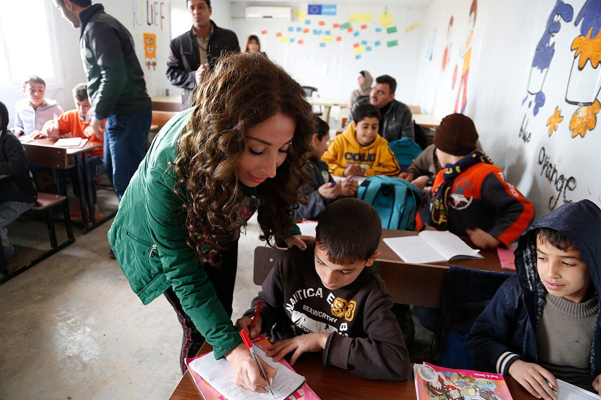
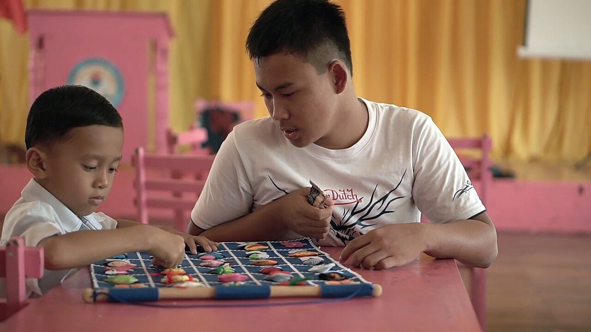

Professor cria a atividade
Cadastre ou cole a atividade que será aplicada para a turma.
O IncluiEdu ajuda professores a adaptar atividades de acordo com as necessidades e características de aprendizagem de cada aluno: em minutos, com sugestões explicadas e sempre com a palavra final do professor.

matrículas na Educação Especial em 2025
dos estudantes de 4 a 17 anos da Educação Especial estão em classes comuns
têm acesso ao Atendimento Educacional Especializado (AEE)
Fonte: INEP – Censo Escolar da Educação Básica 2025, conforme levantamento da equipe do projeto.
O IncluiEdu acompanha todo o processo, desde a criação da atividade até o registro dos resultados.
Cadastre ou cole a atividade que será aplicada para a turma.
O sistema considera as características e os recursos facilitadores registrados.
São sugeridas estratégias e uma versão em etapas, que o professor revisa e aprova.
O professor registra o resultado e acompanha a evolução na memória pedagógica.
A professora Ana tem 32 alunos no 5º ano. Davi tem TDAH e perde o foco em enunciados longos. Com o IncluiEdu, ela seleciona a atividade “Frações com pizza” e o perfil do Davi.

Ferramentas desenvolvidas para apoiar o professor no processo de inclusão.
Registre necessidades, preferências e facilitadores de cada estudante.
Ver alunos →Crie e organize as atividades por disciplina e turma.
Ver atividades →Sugestões personalizadas e explicadas, geradas a partir do perfil.
Como adaptamos →Registre resultados e veja a evolução de cada aluno.
Ver resultados →Histórico das estratégias que funcionaram, aluno por aluno.
Ver um perfil →Alto contraste, texto ampliado, leitura em voz alta e Libras (VLibras).
Saiba mais →Textos curtos e práticos para professores, famílias e estudantes.

Entenda a diferença e por que ela importa na sala de aula.

Três princípios para planejar aulas que funcionam para todos.

Técnicas com base científica e um cronômetro de estudos.
É criar possibilidades para que cada aluno consiga aprender da melhor maneira possível.
Antes eu levava uma noite inteira para adaptar uma prova. Com as sugestões prontas, só reviso e ajusto.
A memória pedagógica me mostra o que já funcionou com cada aluno. Isso ajuda muito na troca de professor.
Gosto de fazer uma etapa de cada vez e de poder ouvir a pergunta. Fica mais fácil terminar.
Depoimentos ilustrativos do protótipo, criados para demonstrar o uso da plataforma.
O professor usa de graça. Escolas e redes ganham painéis e acompanhamento coletivo.
Grátis
Para começar hoje, na sua turma.
Sob consulta
Para equipes pedagógicas e salas de recursos (AEE).
Sob consulta
Para secretarias municipais e estaduais.
Comece a utilizar o IncluiEdu ou explore a demonstração com dados de exemplo.